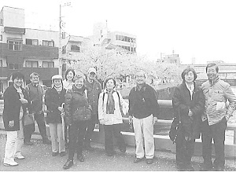

１ 設立趣旨
この散歩隊の設立趣旨は､下記目的で､江戸･江戸界隈の祭り・花見物をしつつ、風情の残る江戸の町を散策する会です。・讃岐出身の田舎者が、江戸散歩を通して江戸・東京の歴史等の教養を深める。
・散歩隊に参加し、歩くことによって健康増進を図る。
・家族で参加して、家庭の絆の修復・増強を目指す。
２ 散歩隊参加資格
会の趣旨に賛同し、一緒に散歩したいと思う玉翠会メンバーが、散歩隊のメイリングリストに登録すれば､散歩案内が配信され､隊員・家族・友人等で参加でき、また、自分達が企画する散歩計画について、隊員に参加を呼びかけることができます。３ 組織
将来的な組織としては、隊員は、１番隊から１０番隊に分かれ、散歩企画・実現を担当します。各番隊は、卒業年度の末尾の数字ごとに、例えば２番隊ならば、32年卒、42年卒、52年卒、62年卒、H2年卒、H12年卒、H22年卒の者で構成され、先輩・後輩が一緒になって散歩計画の立案・実行を通じて、先輩・後輩の交流を図ります。また、地域毎に、例えば浅草区域に居住・勤務している人が「浅草隊」を、日本橋地区には「日本橋隊」を作って、そこでも地域ごとの交流を図るということになれればと期待しています。
４ 第１回大江戸散歩隊出動す
平成25年3月30目、「旧東海道品川宿の宿場跡を散歩・屋形船の観桜クルーズ」という第１回の散歩が実施されました。（1）旧東海道の品川宿散歩

当日は、品川宿散歩には約20名が参加して、品川寺（古刹なので名称も「ほんせんじ」と呼ばれる）に集合して、各自自由に、品川宿の旧東海道を歩きつつ、途中で、天妙国寺（将軍が宿泊するなどの名刹）で満開の桜を見物､再び、旧東海道を１５分程歩いて荏原神社に。荏原神社前の赤い橋や神社のそばを流れる目黒川の満開の桜を堪能しました。その後、品川神社に参拝し富士山登山（江戸の富士山信仰の名残で、数ｍの富士山を登山（?））し、再び旧東海道の品川宿を江戸弁ならぬ讃岐弁を喋りながらの散策後、屋形船の乗船場の北品川に到着しました。
（2）屋形船クルーズ
そこで、乗船場で待機していた者と合流し、総勢５０名で屋形船に乗船。
屋形船では、中村先輩の音頭で､乾杯。刺身、揚げたての天ぷらが次々と出されて、更にアルコールは、飲み放題のビール、酒、焼酎等がでて、宴会モード。それでも、吾妻橋を通過すると、墨堤の両岸に咲く、満開の桜と目前の東京スカイツリーが目前に。停船して、墨田公園の満開の桜と新タワーを堪能しました。
船は、再び大川を下り、俳句作り、お絵描き、大西舞子さん指導、太古先輩のハーモニカ伴奏による、「春」（春のうららの隅田川～）などを大声で歌い、モリリンと舞子ちゃんの「さくら」の合唱もあり、屋形舟観桜クルーズは、全員で、大笑いしつつの大宴会で、品川宿散歩と大川クルーズを大いに堪能しました。
５ 今後の散歩日程等と実施
というようなことで、犬江戸散歩隊の第一回の旧品川宿散歩を終え、今後も根津神社のつつじ祭り・谷根千の散歩、亀戸天神の藤祭と深川の堀の散歩が開催されました（原稿作成時点では予定ですが）。今後も、１番隊から１０番隊までの各番隊や地域分隊が、江戸の祭りや花見物の日程に合わせて、計画を検討中です。
皆さん方も、一緒に歩いて、讃岐弁で大笑いしつつ、大江戸散歩をしませんか。
参加申込みは、下記にメール下さい。
連結先
岡崎洋（S37卒）okazaki＠o2m-law.com
長尾みどり（S53卒）jade＠zb3.so-net.ne.jp
池内久徳（S56卒）kyu-kyu.ike99＠i.softbank.jp
原木俊哉（S60卒）toshiya.haraki＠gmail.com